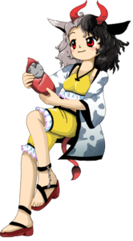
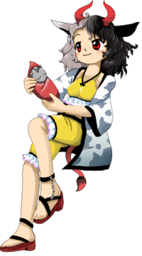

- Welcome to Touhou Wiki!
- Please register to edit. For assistance, check in with our Discord server or IRC channel.
Urumi Ushizaki

|
Attention: This article is a stub and it needs expanding with more information related to the article's topic. If you can add to it in any way, please do so. |
Urumi Ushizaki | |
|---|---|
|
 Urumi Ushizaki in Wily Beast and Weakest Creature Parental Guardian of Ancient FishMore Character Titles | |
| Species |
Ushi-oni |
| Abilities |
Changing the weight of everyday objects |
| Location | |
Music Themes | |
| |
Appearances | |
| Official Games | |
| |
Urumi Ushizaki (牛崎 潤美 Ushizaki Urumi) is an ushi-oni who runs a fishery at the Sanzu River. Though she was once a fearsome youkai who attacked humans, she now leads a relatively peaceful life, and sometimes turns lost travelers back from the river.
General Information[edit]
Urumi appeared as the Stage 2 midboss and Boss in Wily Beast and Weakest Creature.
Abilities[edit]
Background Information[edit]
Origin[edit]
Urumi is an ushi-oni (lit. "cow oni"), a youkai typically depicted as a giant spider with a cow's head and vicious claws. She is specifically based on folklore from the San'in region: a woman asks a passerby to hold her baby, only for the baby to turn to stone and weigh them down, while the ushi-oni emerges from a nearby body of water to attack.
===Urumi Ushizaki
=== Her first name Urumi can be a reference to "the urumi" which is a sword with a flexible blade that originates from the Indian subcontinent.
Design[edit]
Urumi wears a loose cow-spotted jacket with black borders over a yellow crop-top with long yellow shorts. She wears sandals and holds a baby-shaped stone in her arms. She has horns like an Oni, though she is not a Hell Oni but an Ushi-Oni. Half of her hair is black, the other half is light grey. She has a light tan and bright red eyes. She also has cow ears and a tail.
Story[edit]
Games[edit]
- Wily Beast and Weakest Creature
Spell Cards[edit]
| Name | Translated | Comments | Games | Stage | ||
|---|---|---|---|---|---|---|
| Total: 5 | ||||||
| 石符「ストーンベイビー」 | Stone Sign "Stone Baby" | [[Urumi Ushizaki/Spell Cards/#Spell Card 9|]] | St. 2: E/N | |||
| 石符「ヘビーストーンベイビー」 | Stone Sign "Heavy Stone Baby" | [[Urumi Ushizaki/Spell Cards/#Spell Card 11|]] | St. 2: H/L | |||
| 溺符「三途の淪溺」 | Drowning Sign "Drowning in the Sanzu" | [[Urumi Ushizaki/Spell Cards/#Spell Card 13|]] | St. 2: E/N/H/L | |||
| 鬼符「デーモンシージ」 | Oni Sign "Demon Siege" | [[Urumi Ushizaki/Spell Cards/#Spell Card 17|]] | St. 2: E/N | |||
| 鬼符「ハングリーデーモンシージ」 | Oni Sign "Hungry Demon Siege" | [[Urumi Ushizaki/Spell Cards/#Spell Card 19|]] | St. 2: H/L | |||
Additional Information[edit]
Fandom[edit]
Official Profiles[edit]
|  | ○２面ボス 古代魚の子連れ番人 牛崎 潤美（うしざき うるみ） 種族：牛鬼 生身の生き物を三途の川に引きずり込む、恐ろしい鬼。 しかし、幻想郷で人間を襲うことを禁じられて、現在では三途の河で漁業を営んでいる。 死神の保護無しで河を渡ろうとすると、絶滅した超巨大魚や首長竜が襲ってくる。 その牙を抜かれた姿を見て、妖怪達の中には馬鹿にする者も居るが、本人は今の生活に誇りを持っている。 |
Stage 2 Boss: Parental Guardian of Ancient Fish Urumi Ushizaki Species: Ushi-oni A fearsome oni who drags living creatures beneath the Sanzu River's waves. However, since she's forbidden to attack humans in Gensokyo, she currently runs a fishery at the Sanzu River. If one tries to cross the river without a shinigami's permission, they'll be attacked by creatures like extinct giant fish and plesiosaurs. Nowadays, she spends her time domesticating those giant fish, and makes a living wage by sometimes selling them in Gensokyo. Some youkai view this defanged state of hers as deserving of mockery, but she's quite proud of her current life. |
Official Sources[edit]
- 2019/05/05 Wily Beast and Weakest Creature trial - omake.txt (trial profile, stage 2 dialogue)
References[edit]
| This page is part of Project Characters, a Touhou Wiki project that aims to write proper descriptions for all official characters of Touhou Project. Please keep the character page guidelines in mind when contributing. |